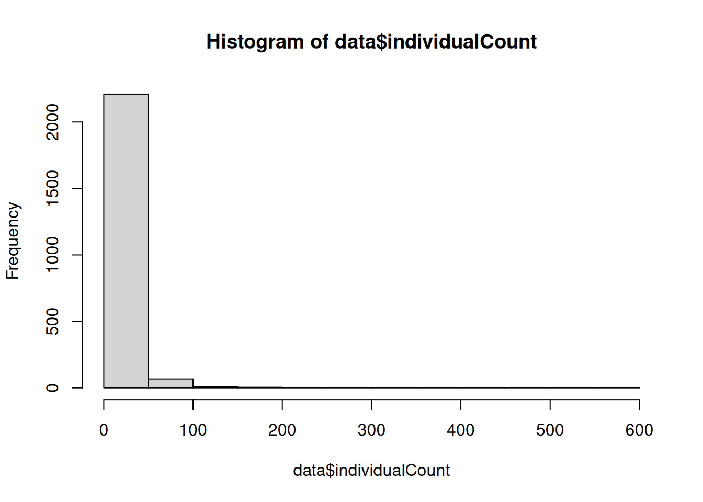

setup
library(ggplot2)
library(here)
library(skimr)library(ggplot2)
library(here)
library(skimr)data <- read.csv(here("data/zoo_data_pre_obis_merg.csv"))# print(head(data)) # View first few rows
# print(str(data)) # Structure of the data frame
# print(summary(data)) # Statistical summary of the data
# Use skimr to provide a detailed summary
skimmed_data <- skimr::skim(data)
print(skimmed_data)── Data Summary ────────────────────────
Values
Name data
Number of rows 2297
Number of columns 73
_______________________
Column type frequency:
character 31
logical 1
numeric 41
________________________
Group variables None
── Variable type: character ────────────────────────────────────────────────────
skim_variable n_missing complete_rate min max empty n_unique whitespace
1 file_metadta 0 1 27 40 0 16 0
2 cruise_id 0 1 7 7 0 16 0
3 station 0 1 2 15 0 5 0
4 site 0 1 2 2 0 5 0
5 date_time 0 1 20 20 0 50 0
6 date 0 1 20 20 0 31 0
7 time_gmt 0 1 8 8 0 47 0
8 notes 0 1 0 29 2114 4 0
9 taxa_orig 0 1 5 26 0 91 0
10 taxa 0 1 6 21 0 82 0
11 lifeStage 0 1 0 9 1733 8 0
12 scientificName 0 1 6 20 0 77 0
13 scientificNameID 0 1 38 41 0 77 0
14 match_type 0 1 5 8 0 4 0
15 date_analyzed 0 1 10 10 0 53 0
16 url 0 1 59 62 0 77 0
17 scientificname 0 1 6 20 0 77 0
18 authority 0 1 0 24 209 56 0
19 status 0 1 8 22 0 2 0
20 rank 0 1 5 10 0 11 0
21 valid_name 0 1 6 20 0 77 0
22 valid_authority 0 1 0 24 209 56 0
23 kingdom 0 1 8 9 0 2 0
24 phylum 0 1 7 13 0 10 0
25 class 0 1 0 14 244 18 0
26 order 0 1 0 17 515 20 0
27 family 0 1 0 16 1004 33 0
28 genus 0 1 0 13 1117 41 0
29 citation 0 1 110 667 0 77 0
30 lsid 0 1 38 41 0 77 0
31 modified 0 1 20 20 0 67 0
── Variable type: logical ──────────────────────────────────────────────────────
skim_variable n_missing complete_rate mean count
1 unacceptreason 2297 0 NaN ": "
── Variable type: numeric ──────────────────────────────────────────────────────
skim_variable n_missing complete_rate mean sd
1 mesh 0 1 331. 158.
2 lat_in 0 1 24.7 0.255
3 lon_in 0 1 -81.2 0.553
4 coordinateUncertaintyInMeters 0 1 500 0
5 minimumDepthInMeters 0 1 0 0
6 maximumDepthInMeters 0 1 32.7 8.68
7 flowmeter_in 0 1 1300. 11457.
8 flowmeter_out 0 1 5106. 13439.
9 flowmeter_diff 0 1 3806. 7424.
10 ship_speed_knots 0 1 1.46 0.134
11 inpeller_constant 0 1 0.245 0
12 split_size 0 1 0.491 0.0477
13 tow_time_min 0 1 4.74 1.34
14 net_size 0 1 0.505 0.0216
15 net_area 0 1 0.201 0.0187
16 distance_m 0 1 932. 1819.
17 tow_speed_m_sec 0 1 3.72 6.35
18 volume_filt_cubic_m 0 1 186. 357.
19 pipette_vol_m_l 0 1 4.98 0.657
20 dillution 0 1 782. 278.
21 dillution_factor 0 1 162. 74.6
22 split_amount 0 1 0.175 0.495
23 splits_analyzed 1789 0.221 0.223 0.218
24 individualCount 0 1 9.80 27.3
25 aliquot_1 0 1 3.33 9.05
26 aliquot_2 0 1 3.30 10.2
27 aliquot_3 0 1 3.18 8.82
28 mean 0 1 3.27 9.10
29 ind_m3 0 1 24.3 123.
30 number_ind_sample 0 1 1871. 9334.
31 total_split_amount 0 1 2.53 1.41
32 total_split_frac 0 1 0.453 0.109
33 aphiaID 0 1 89110. 71018.
34 taxon_rank_id 0 1 136. 55.9
35 valid_aphia_id 0 1 89292. 71723.
36 parent_name_usage_id 0 1 192979. 315123.
37 is_marine 0 1 1 0
38 is_brackish 228 0.901 0.473 0.499
39 is_freshwater 264 0.885 0.319 0.466
40 is_terrestrial 287 0.875 0.158 0.365
41 is_extinct 1717 0.253 0 0
p0 p25 p50 p75 p100 hist
1 64 200 200 500 500 ▁▇▁▁▇
2 24.5 24.5 24.5 25.0 25.4 ▇▁▁▃▁
3 -81.7 -81.7 -81.4 -80.4 -80.4 ▇▇▁▁▆
4 500 500 500 500 500 ▁▁▇▁▁
5 0 0 0 0 0 ▁▁▇▁▁
6 5 23 36.5 40.5 40.5 ▁▁▃▁▇
7 0 0 0 0 119811 ▇▁▁▁▁
8 100 1009 2973 4474 120111 ▇▁▁▁▁
9 100 1009 2969 4360 77000 ▇▁▁▁▁
10 1 1.5 1.5 1.5 1.5 ▁▁▁▁▇
11 0.245 0.245 0.245 0.245 0.245 ▁▁▇▁▁
12 0.25 0.5 0.5 0.5 0.5 ▁▁▁▁▇
13 1 5 5 5 8 ▂▁▇▁▁
14 0.5 0.5 0.5 0.5 0.6 ▇▁▁▁▁
15 0.196 0.196 0.196 0.196 0.283 ▇▁▁▁▁
16 24.5 247. 727. 1068. 18865 ▇▁▁▁▁
17 0.0817 1.17 2.43 4.08 62.9 ▇▁▁▁▁
18 4.81 48.5 143. 215. 3704. ▇▁▁▁▁
19 2 5 5 5 10 ▁▇▁▁▁
20 150 500 1000 1000 1000 ▁▂▂▁▇
21 30 100 200 200 500 ▅▇▁▁▁
22 0 0 0 0 2 ▇▁▁▁▁
23 0 0 0.25 0.5 0.5 ▇▁▅▁▆
24 1 1 3 8 597 ▇▁▁▁▁
25 0 0 1 3 160 ▇▁▁▁▁
26 0 0 1 3 265 ▇▁▁▁▁
27 0 0 1 3 182 ▇▁▁▁▁
28 0.333 0.333 1 2.67 199 ▇▁▁▁▁
29 0.0108 0.932 2.77 11.1 3060. ▇▁▁▁▁
30 26.7 133. 267. 960 211733. ▇▁▁▁▁
31 2 2 2 2 8 ▇▁▁▁▁
32 0.125 0.5 0.5 0.5 0.5 ▁▁▁▁▇
33 101 10194 104193 106727 347746 ▃▇▁▁▁
34 30 100 180 180 220 ▃▂▂▇▁
35 101 10194 104193 106727 574543 ▇▂▁▁▁
36 2 104079 104106 128586 1740301 ▇▁▁▁▁
37 1 1 1 1 1 ▁▁▇▁▁
38 0 0 0 1 1 ▇▁▁▁▇
39 0 0 0 1 1 ▇▁▁▁▃
40 0 0 0 0 1 ▇▁▁▁▂
41 0 0 0 0 0 ▁▁▇▁▁skimr::skim_tee(data)── Data Summary ────────────────────────
Values
Name data
Number of rows 2297
Number of columns 73
_______________________
Column type frequency:
character 31
logical 1
numeric 41
________________________
Group variables None
── Variable type: character ────────────────────────────────────────────────────
skim_variable n_missing complete_rate min max empty n_unique whitespace
1 file_metadta 0 1 27 40 0 16 0
2 cruise_id 0 1 7 7 0 16 0
3 station 0 1 2 15 0 5 0
4 site 0 1 2 2 0 5 0
5 date_time 0 1 20 20 0 50 0
6 date 0 1 20 20 0 31 0
7 time_gmt 0 1 8 8 0 47 0
8 notes 0 1 0 29 2114 4 0
9 taxa_orig 0 1 5 26 0 91 0
10 taxa 0 1 6 21 0 82 0
11 lifeStage 0 1 0 9 1733 8 0
12 scientificName 0 1 6 20 0 77 0
13 scientificNameID 0 1 38 41 0 77 0
14 match_type 0 1 5 8 0 4 0
15 date_analyzed 0 1 10 10 0 53 0
16 url 0 1 59 62 0 77 0
17 scientificname 0 1 6 20 0 77 0
18 authority 0 1 0 24 209 56 0
19 status 0 1 8 22 0 2 0
20 rank 0 1 5 10 0 11 0
21 valid_name 0 1 6 20 0 77 0
22 valid_authority 0 1 0 24 209 56 0
23 kingdom 0 1 8 9 0 2 0
24 phylum 0 1 7 13 0 10 0
25 class 0 1 0 14 244 18 0
26 order 0 1 0 17 515 20 0
27 family 0 1 0 16 1004 33 0
28 genus 0 1 0 13 1117 41 0
29 citation 0 1 110 667 0 77 0
30 lsid 0 1 38 41 0 77 0
31 modified 0 1 20 20 0 67 0
── Variable type: logical ──────────────────────────────────────────────────────
skim_variable n_missing complete_rate mean count
1 unacceptreason 2297 0 NaN ": "
── Variable type: numeric ──────────────────────────────────────────────────────
skim_variable n_missing complete_rate mean sd
1 mesh 0 1 331. 158.
2 lat_in 0 1 24.7 0.255
3 lon_in 0 1 -81.2 0.553
4 coordinateUncertaintyInMeters 0 1 500 0
5 minimumDepthInMeters 0 1 0 0
6 maximumDepthInMeters 0 1 32.7 8.68
7 flowmeter_in 0 1 1300. 11457.
8 flowmeter_out 0 1 5106. 13439.
9 flowmeter_diff 0 1 3806. 7424.
10 ship_speed_knots 0 1 1.46 0.134
11 inpeller_constant 0 1 0.245 0
12 split_size 0 1 0.491 0.0477
13 tow_time_min 0 1 4.74 1.34
14 net_size 0 1 0.505 0.0216
15 net_area 0 1 0.201 0.0187
16 distance_m 0 1 932. 1819.
17 tow_speed_m_sec 0 1 3.72 6.35
18 volume_filt_cubic_m 0 1 186. 357.
19 pipette_vol_m_l 0 1 4.98 0.657
20 dillution 0 1 782. 278.
21 dillution_factor 0 1 162. 74.6
22 split_amount 0 1 0.175 0.495
23 splits_analyzed 1789 0.221 0.223 0.218
24 individualCount 0 1 9.80 27.3
25 aliquot_1 0 1 3.33 9.05
26 aliquot_2 0 1 3.30 10.2
27 aliquot_3 0 1 3.18 8.82
28 mean 0 1 3.27 9.10
29 ind_m3 0 1 24.3 123.
30 number_ind_sample 0 1 1871. 9334.
31 total_split_amount 0 1 2.53 1.41
32 total_split_frac 0 1 0.453 0.109
33 aphiaID 0 1 89110. 71018.
34 taxon_rank_id 0 1 136. 55.9
35 valid_aphia_id 0 1 89292. 71723.
36 parent_name_usage_id 0 1 192979. 315123.
37 is_marine 0 1 1 0
38 is_brackish 228 0.901 0.473 0.499
39 is_freshwater 264 0.885 0.319 0.466
40 is_terrestrial 287 0.875 0.158 0.365
41 is_extinct 1717 0.253 0 0
p0 p25 p50 p75 p100 hist
1 64 200 200 500 500 ▁▇▁▁▇
2 24.5 24.5 24.5 25.0 25.4 ▇▁▁▃▁
3 -81.7 -81.7 -81.4 -80.4 -80.4 ▇▇▁▁▆
4 500 500 500 500 500 ▁▁▇▁▁
5 0 0 0 0 0 ▁▁▇▁▁
6 5 23 36.5 40.5 40.5 ▁▁▃▁▇
7 0 0 0 0 119811 ▇▁▁▁▁
8 100 1009 2973 4474 120111 ▇▁▁▁▁
9 100 1009 2969 4360 77000 ▇▁▁▁▁
10 1 1.5 1.5 1.5 1.5 ▁▁▁▁▇
11 0.245 0.245 0.245 0.245 0.245 ▁▁▇▁▁
12 0.25 0.5 0.5 0.5 0.5 ▁▁▁▁▇
13 1 5 5 5 8 ▂▁▇▁▁
14 0.5 0.5 0.5 0.5 0.6 ▇▁▁▁▁
15 0.196 0.196 0.196 0.196 0.283 ▇▁▁▁▁
16 24.5 247. 727. 1068. 18865 ▇▁▁▁▁
17 0.0817 1.17 2.43 4.08 62.9 ▇▁▁▁▁
18 4.81 48.5 143. 215. 3704. ▇▁▁▁▁
19 2 5 5 5 10 ▁▇▁▁▁
20 150 500 1000 1000 1000 ▁▂▂▁▇
21 30 100 200 200 500 ▅▇▁▁▁
22 0 0 0 0 2 ▇▁▁▁▁
23 0 0 0.25 0.5 0.5 ▇▁▅▁▆
24 1 1 3 8 597 ▇▁▁▁▁
25 0 0 1 3 160 ▇▁▁▁▁
26 0 0 1 3 265 ▇▁▁▁▁
27 0 0 1 3 182 ▇▁▁▁▁
28 0.333 0.333 1 2.67 199 ▇▁▁▁▁
29 0.0108 0.932 2.77 11.1 3060. ▇▁▁▁▁
30 26.7 133. 267. 960 211733. ▇▁▁▁▁
31 2 2 2 2 8 ▇▁▁▁▁
32 0.125 0.5 0.5 0.5 0.5 ▁▁▁▁▇
33 101 10194 104193 106727 347746 ▃▇▁▁▁
34 30 100 180 180 220 ▃▂▂▇▁
35 101 10194 104193 106727 574543 ▇▂▁▁▁
36 2 104079 104106 128586 1740301 ▇▁▁▁▁
37 1 1 1 1 1 ▁▁▇▁▁
38 0 0 0 1 1 ▇▁▁▁▇
39 0 0 0 1 1 ▇▁▁▁▃
40 0 0 0 0 1 ▇▁▁▁▂
41 0 0 0 0 0 ▁▁▇▁▁colname <- "lat_in"
# Convert row to numeric. Non-convertible entries will become NA
numeric_colname <- paste(colname, "_as_numeric", sep = "")
data[[numeric_colname]] <- as.numeric(as.character(data[[colname]]))
# Check for NAs which indicate problematic entries
num_non_numeric <- sum(is.na(data[[numeric_colname]]))
# Print the number of non-numeric rows
print(paste("Number of non-numeric rows in 'NumericColumn':", num_non_numeric))[1] "Number of non-numeric rows in 'NumericColumn': 0"# Optional: To see which rows are non-numeric
problematic_rows <- data[is.na(data[[numeric_colname]]), ]
print(problematic_rows) [1] file_metadta cruise_id
[3] station site
[5] mesh date_time
[7] date time_gmt
[9] lat_in lon_in
[11] coordinateUncertaintyInMeters minimumDepthInMeters
[13] maximumDepthInMeters flowmeter_in
[15] flowmeter_out flowmeter_diff
[17] ship_speed_knots inpeller_constant
[19] split_size notes
[21] tow_time_min net_size
[23] net_area distance_m
[25] tow_speed_m_sec volume_filt_cubic_m
[27] taxa_orig taxa
[29] lifeStage scientificName
[31] scientificNameID match_type
[33] date_analyzed pipette_vol_m_l
[35] dillution dillution_factor
[37] split_amount splits_analyzed
[39] individualCount aliquot_1
[41] aliquot_2 aliquot_3
[43] mean ind_m3
[45] number_ind_sample total_split_amount
[47] total_split_frac aphiaID
[49] url scientificname
[51] authority status
[53] unacceptreason taxon_rank_id
[55] rank valid_aphia_id
[57] valid_name valid_authority
[59] parent_name_usage_id kingdom
[61] phylum class
[63] order family
[65] genus citation
[67] lsid is_marine
[69] is_brackish is_freshwater
[71] is_terrestrial is_extinct
[73] modified lat_in_as_numeric
<0 rows> (or 0-length row.names)Looking at a histogram of individualCount we can see that rows generally have low numbers of individuals:
hist(data$individualCount)
A scatter plot between the ind_m3 and individualCount shows that rows with more individuals also have a higher density of individuals per volume.
plot(data$individualCount, data$ind_m3, main = "Scatter plot", xlab = "ind_m3", ylab = "individualCount")